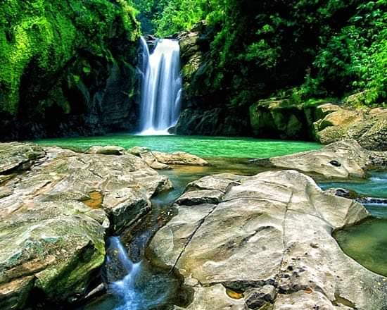
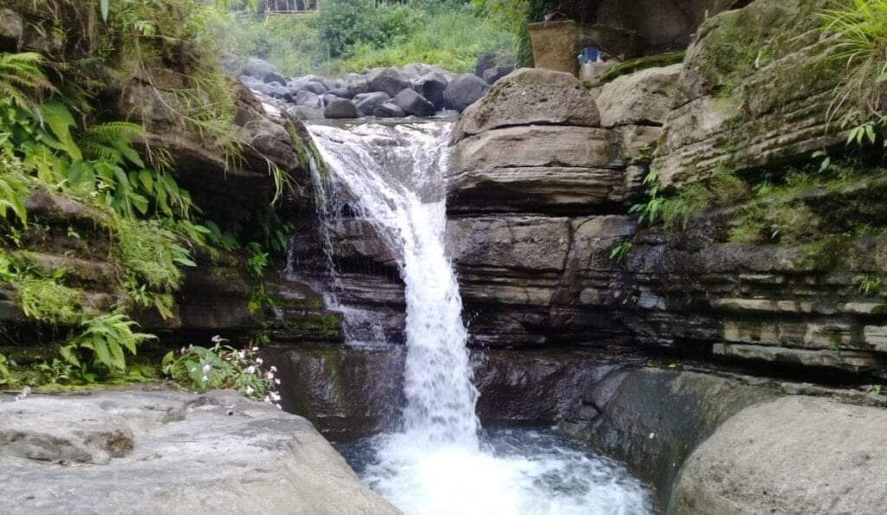

SANTOL TOURIST ATTRACTIONS
BALAY ANITO FALLS
"BALAY ANITO" means house of unseen friends or anitos. It is great waterfall cascading to a very deep water called "BAN-AW" about 20 meters deep. The sites are also steep; one has to cling to the exposed roots of trees precipice in order to get down.
ACTIVITES: Swimming, Hiking, Sightseeing, Picknicking
SIMMINUBLAN FALLS

"SIMMINUBLAN FALLS" is shaped like "PALAYOK". This natural pool is about 20 meters deep. The cool, calm and crawling water in the area refreshes a weary and tired adventure or traveller.
ACTIVITES: Swimming, Hiking, Sightseeing, Picknicking
SASABA RICE TERRACES/ TRAMLINE

"SASABA RICE TERRACES/ TRAMLINE" can be viewed at Barangay Ramot but it is located in Barangay Sasaba. It can be best viewed in the Tramline located in Barangay Ramot. Sasaba Rice Terraces fascinating view curved out in the area of Sitio Bacayawan, Tiko, Gambang, and Putrido.
ACTIVITES: Hiking, Sightseeing, Picknicking
BUGANG-GANG FALLS
BUGANG-GANG FALLS is located at Barangay Sasaba, Santol La Union. Newly discovered water falls situated at the Bugang-gang river. Natural swimming pools can be found in the area that is suitable for swimming, diving and picknicking. It is considered as the new tourism potential of Santol.
ACTIVITES: Hiking, Diving, Swimming, Sightseeing, Picknicking